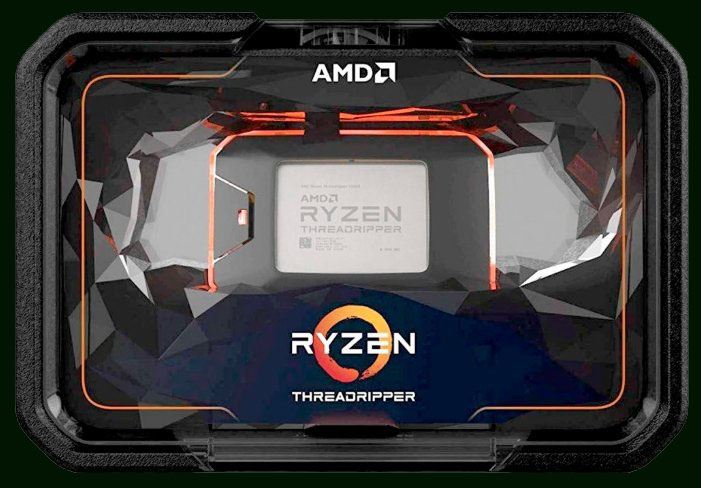

|
AMD Ryzen Threadripper 2970WX
Общие параметры:
Модель - AMD Ryzen Threadripper 2970WX
Поколение процессоров - AMD RYZEN 2000
Год релиза - 2018
Сокет - TR4
Количество ядер - 24
Максимальное число потоков (шт) - 48 шт
Кэш L1 (инструкции) - 1536 КБ
Кэш L1 (данные) - 768 КБ
Объем кэша L2 - 12 Мб
Объем кэша L3 - 64 МБ
Базовая частота процессора (МГц) - 3000 МГц (Макс. в турбо режиме (МГц) - 4200 МГц
Множитель - 30
Свободный множитель - есть
Тип памяти - DDR4-2933 МГц
Максимально поддерживаемый объем памяти (ГБ) - 256 ГБ
Количество каналов - 4
Поддержка режима ECC - есть
Тепловыделение (TDP) (Вт) - 250 Вт
Максимальная температура процессора - 68 °C

|